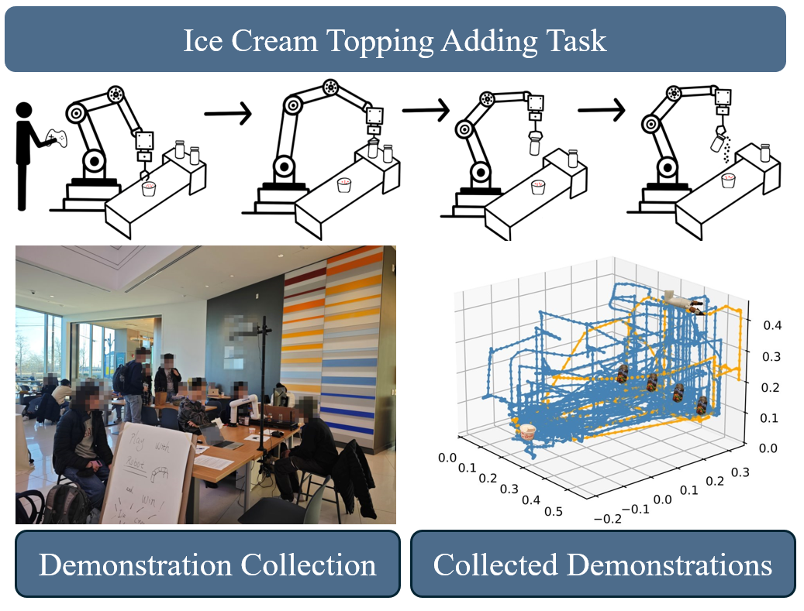
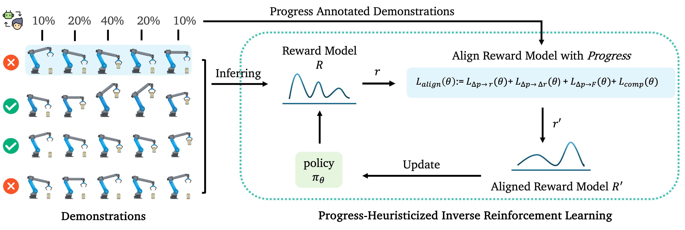
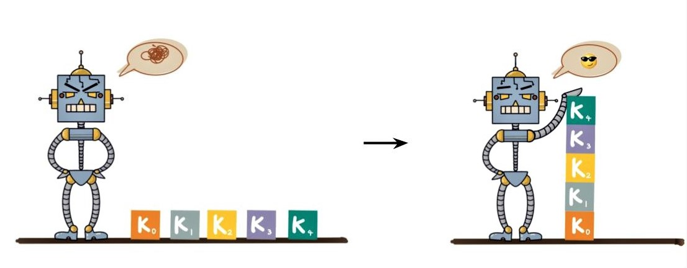

About
I am a Ph.D. candidate in Computer Science at Tufts University, advised by faculty in Accessible and Applied Robotics Lab (AABL). I study how people teach robots and how robots can learn effectively from rich, scalar, and structured feedback. My long-term goal is to make robot learning from everyday people robust, sample-efficient, and accessible.
Actively open to research collaborations in HRI, RLHF for robots, and human data collection methodology.
Latest News
-
Aug 2025🎓 Mentoring Co-authored three papers with my mentees at IEEE RO-MAN 2025.
-
May 2025🏆 Award Selected for the Doctoral Consortium: "Enabling Robust Learning from Non-Experts" at IEEE ICRA 2025.
-
Aug 2024🏆 Award
Publications
Conference Papers
Demonstration Sidetracks: Categorizing Systematic Non-Optimality in Human Demonstrations
Journal Publications
Top-K Interesting Preference Rules Mining Based on MaxClique
Contextual Preference Collaborative Measure Framework Based on Belief System
Conditional Preference Mining Based on MaxClique
Workshops & Doctoral Consortium
Doctoral Consortium: Human-Robot Interaction via Expressive Human Feedback
PHIRL: Progress-Heuristicized Inverse Reinforcement Learning
Active Feedback Learning with Rich Feedback
Education
Tufts UniversityTufts UniversityExperience & Service
Teaching AssistantReviewer / Program CommitteeHonors & AwardsContact
Email: hyu08@tufts.edu
Google Scholar: Profile